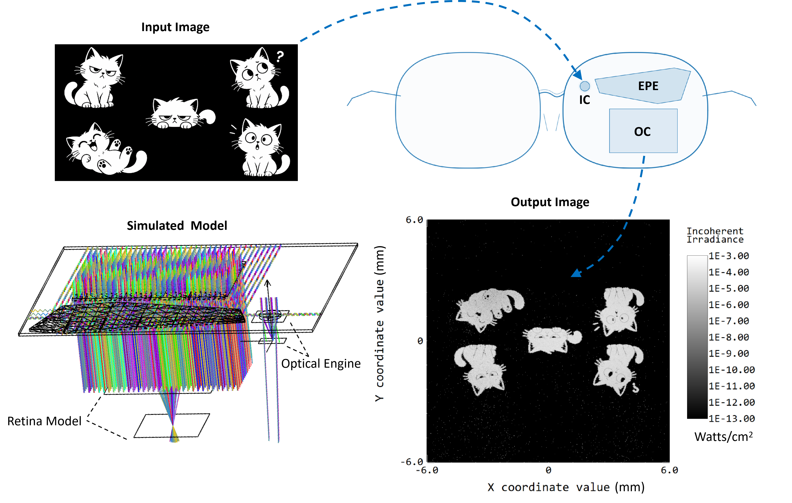
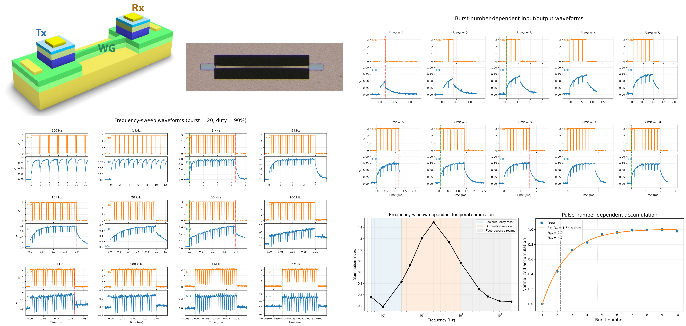
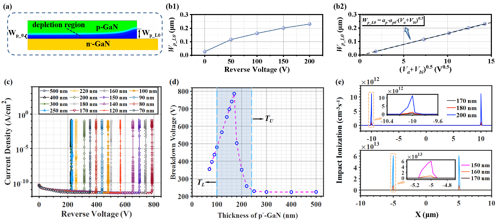
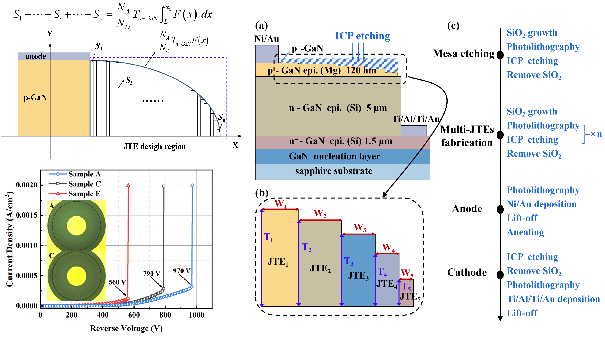
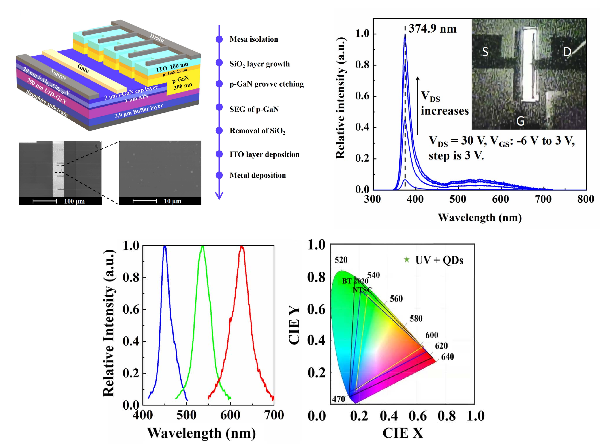

Sep 2021 — Jul 2024
Hong Kong University of Science and Technology
PhD Studies · Electronic Computer Science

I am a second-year PhD student at HKUST with research interests spanning optics, display technologies, and semiconductor devices. My experience combines computational modeling with hands-on cleanroom fabrication, with proficiency in simulation tools including Ansys Lumerical and Sentaurus TCAD.

Designed an end-to-end SiC diffractive waveguide architecture for an AR near-eye display, with the system organized from the optical engine through the input coupler, total-internal-reflection propagation, exit-pupil expansion and output coupling to the eye. The design targets wide-field image delivery together with an expanded and spatially uniform eyebox rather than optimizing a single grating in isolation. Zemax OpticStudio NSC was used for system-level ray tracing, image reconstruction and multi-eye-position evaluation, while Ansys Lumerical was used to study diffraction behavior and coupling efficiency of the grating regions. The workflow connects grating-level optical response with full-system performance, allowing the IC, EPE and OC regions to be iteratively adjusted according to image quality, pupil coverage and irradiance uniformity across the eyebox.

Investigated a GaN-based transmitter–waveguide–receiver pathway for optical temporal preprocessing, where electrically driven optical pulses are generated at the transmitter, routed through an integrated waveguide and converted into a time-dependent electrical response at the receiver. The study focused on whether the receiver dynamics can provide synapse-like temporal functions before conventional electronic processing. Pulse trains with different burst numbers and repetition frequencies were used to characterize accumulation, relaxation and temporal summation behavior. The measured response shows a progressive buildup with repeated excitation and a frequency-dependent transition between reset, summation and fast-response regimes, providing a device-level route for encoding temporal information in the optical link itself rather than treating the waveguide only as a passive communication channel.

Developed an analytical model for the two-dimensional depletion-boundary distribution of non-ideal vertical GaN PN junctions under reverse bias, with particular emphasis on the origin of electric-field crowding that causes premature breakdown. The model was rigorously validated against numerical TCAD simulations and used to connect depletion geometry, fixed-charge distribution and peak electric field in a unified physical description. Beyond explaining the breakdown mechanism, the framework provides a quantitative basis for designing termination structures such as junction termination extensions, guard rings and field plates. The p-GaN depletion region was further analyzed to identify how layer thickness and doping influence non-uniform charge distribution, enabling epitaxial growth parameters to become part of the breakdown-voltage optimization strategy and potentially reducing the complexity and cost of later termination processing.

Designed and experimentally validated a multi-step junction termination extension for quasi-vertical GaN PN diodes to suppress the severe electric-field crowding that limits reverse-bias breakdown. A step-etched termination geometry was developed from the shape of the depletion boundary, with elliptical boundary fitting used to redistribute the electric field away from the junction edge and reduce the local peak field. Multiple termination layouts were first compared through device simulation and were then fabricated using controlled ICP etching for direct experimental verification. The optimized structure produced a substantially more uniform electric-field distribution and achieved a measured breakdown voltage of 970 V, compared with 560 V for the reference device, while retaining comparable forward characteristics. The work demonstrates a practical field-management strategy for improving the voltage capability and reliability of high-power GaN diodes.

Demonstrated a HEMT-controlled ultraviolet emitter by selectively regrowing p-GaN at the drain of an AlGaN/GaN HEMT, converting part of the transistor structure itself into a light-emitting junction rather than integrating a separate LED. The regrown p-GaN contacts the high-density two-dimensional electron gas to form a lateral p-GaN/2DEG junction, where electron–hole recombination produces ultraviolet electroluminescence. Sentaurus TCAD was used to analyze the band structure and carrier transport mechanism, while the device was fabricated through mesa isolation, dielectric processing, selective p-GaN epitaxy and metal deposition. The fabricated device exhibited a 374.9 nm emission peak whose intensity could be modulated by the gate voltage. The emitted UV light was also used to excite red, green and blue quantum dots, demonstrating a pathway from transistor-level electrical control to compact color-conversion display functionality.